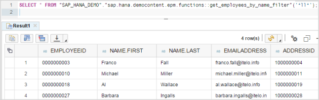

Tutorial: Create a Table User-Defined Function
In SQL, a user-defined function (UDF) enables you to build complex logic into a single database object that you can call from a SELECT statement. You can use a table user-defined function (UDF) to create a parameterized, fixed view of the data in the underlying tables.
Prerequisites
- You have installed the SAP HANA Interactive Education (SHINE) HCODEMOCONTENT delivery unit (DU); this DU contains the tables and views that you want to consume with the procedure you build in this tutorial.
- You have generated data to populate the tables and views provided by the SHINE delivery unit and used in this tutorial. You can generate the data with tools included in the SHINE delivery unit.
Note You might have to adjust the paths in the code examples provided to suit the
package hierarchy in your SAP HANA repository, for example, to point
to the underlying content (demonstration tables and services) referenced in the
tutorial.
Context
A table UDF has a list of input parameters and must return a table of the type
specified in RETURNS <return-type>. The
table UDF named
get_employees_by_name_filter that you create in this
tutorial performs the following actions:
- Executes a SELECT(INNER JOIN) statement against the employee and address tables
- Filters the results by performing a fuzzy search on the last name
Procedure
-
Create the file that will contain the table UDF.
- In the package where you want to create the new table UDF, create a new subpackage called functions, if not already available.
-
From the context menu of the functions folder,
choose
 New
New  File
File  .
.
- Enter the file name get_employees_by_name_filter.hdbtablefunction (remember to use the .hdbtablefunction extension) and choose Create.
-
In the catalog, use the new UDF in an SQL select statement.
-
In the SQL console, enter a value for the last name filter, for
example, *ll*, and choose
 (Run).
Sample Code Remember to modify the paths to point to the correct locations in your environment, for example, the schema name and the package location of the new UDF.
(Run).
Sample Code Remember to modify the paths to point to the correct locations in your environment, for example, the schema name and the package location of the new UDF.select * from "SAP_HANA_DEMO"."sap.hana.democontent.epm.functions::get_employees_by_name_filter"('*ll*');The SQL result is displayed.
-
In the SQL console, enter a value for the last name filter, for
example, *ll*, and choose